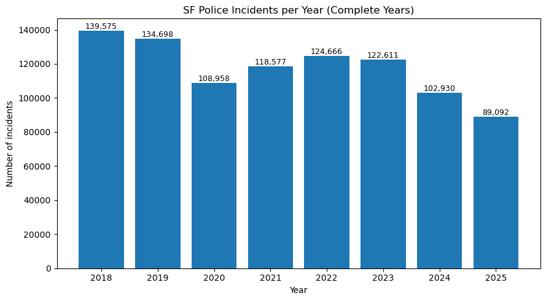

This website presents visualizations created from my course notebooks. It includes one static Matplotlib figure, one interactive Plotly chart, and one interactive Folium map.
This Matplotlib figure shows how the total number of incidents changes across years.

This Plotly visualization lets the user inspect hourly crime patterns by year. You can hover, zoom, and use the animation controls.
This Folium map shows the spatial distribution of incidents across San Francisco. You can pan and zoom the map.